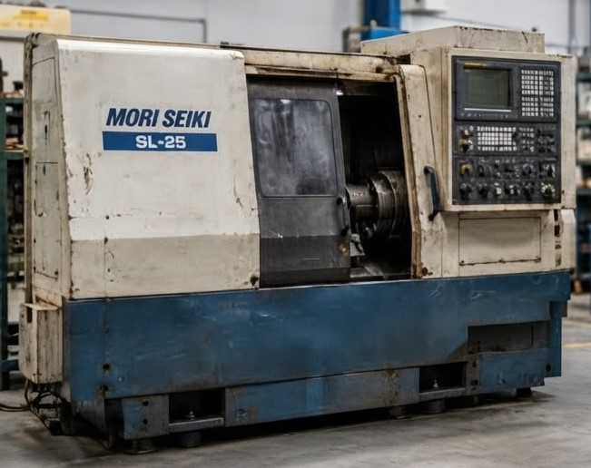

🖥️
Modernización del CNC
Sustitución de controles numéricos obsoletos por sistemas CNC actuales, adaptados a las necesidades de producción de la máquina.


Modernizamos maquinaria CNC industrial para prolongar su vida útil, sustituir tecnología obsoleta y mejorar la fiabilidad, precisión y capacidad productiva del equipo.
Estudiamos la máquina existente, analizamos su viabilidad técnica y definimos una solución de modernización adaptada a sus necesidades de producción.
Muchas máquinas CNC industriales mantienen una estructura mecánica robusta y perfectamente aprovechable, pero incorporan controles, accionamientos, electrónica o sistemas eléctricos que han quedado obsoletos.
En estos casos, un retrofit CNC permite conservar el activo industrial y actualizar los elementos que limitan su funcionamiento, evitando en determinados proyectos la sustitución completa de la máquina.
CNCSystems estudia cada proyecto de forma individual para determinar qué elementos deben sustituirse y cuáles pueden mantenerse, buscando una solución técnica viable para el entorno productivo.
Podemos estudiar la viabilidad de una modernización antes de que tenga que plantearse la sustitución completa del equipo.
Solicitar valoraciónLa intervención se adapta al estado y necesidades de cada máquina. Podemos actuar sobre diferentes sistemas de control, accionamiento, captación y automatización.
Sustitución de controles numéricos obsoletos por sistemas CNC actuales, adaptados a las necesidades de producción de la máquina.
Actualización de drives, accionamientos y servomotores cuando la electrónica existente limita la fiabilidad, precisión o disponibilidad del equipo.
Diseño y renovación de armarios eléctricos, fuentes, protecciones, cableado y elementos necesarios para integrar la nueva arquitectura.
Integración o sustitución de encoders, reglas ópticas y sistemas de captación para adaptar la máquina a los nuevos sistemas de control.
Programación, parametrización e integración de las funciones necesarias para el funcionamiento de la máquina y sus periféricos.
Preparación de la máquina para conectividad, adquisición de datos e integración con sistemas de supervisión y mantenimiento.

El retrofit está especialmente indicado cuando la estructura mecánica de la máquina conserva unas condiciones adecuadas, pero determinados sistemas electrónicos o de control han llegado al final de su ciclo de vida.
Estudiamos proyectos de modernización sobre diferentes tipos de maquinaria CNC industrial:
No todas las máquinas necesitan una modernización completa. El primer paso es determinar si el activo existente merece ser actualizado.
El CNC, PLC, accionamientos o tarjetas originales están descatalogados o resulta difícil encontrar repuestos.
Las intervenciones sobre electrónica antigua se repiten y las paradas afectan a la disponibilidad de producción.
La máquina continúa siendo mecánicamente válida, pero su sistema de control limita velocidad, precisión o flexibilidad.
Se necesita incorporar nuevas posibilidades de comunicación, supervisión o adquisición de datos.
La adquisición de una máquina nueva supone una inversión considerable frente a la posibilidad de actualizar el equipo existente.
La bancada, guías, husillos, cabezal y estructura general todavía ofrecen una base adecuada para continuar produciendo.
Una modernización CNC debe comenzar con un diagnóstico técnico. No se trata simplemente de sustituir un control.
Analizamos la máquina, su estado y las necesidades de producción.
Definimos arquitectura, componentes y alcance de la intervención.
Instalamos y conectamos los nuevos sistemas de control y potencia.
Parametrizamos CNC, PLC y sistemas asociados.
Verificamos el funcionamiento y dejamos la máquina preparada para producción.
El objetivo del retrofit no es simplemente sustituir electrónica: es recuperar capacidad productiva y fiabilidad.
Aprovechamos la estructura mecánica de una máquina existente cuando sus condiciones permiten continuar utilizándola.
Sustituimos componentes cuya disponibilidad o mantenimiento resulta cada vez más complicado.
Una arquitectura electrónica actual facilita el mantenimiento y reduce la dependencia de componentes antiguos.
La actualización del control y accionamientos puede permitir aprovechar mejor las capacidades mecánicas de la máquina.
Una arquitectura actual permite disponer de sistemas más accesibles para diagnóstico y mantenimiento técnico.
La modernización puede preparar el equipo para nuevas necesidades de comunicación y adquisición de información.
Cada máquina tiene una configuración diferente. Por eso, antes de plantear una sustitución de componentes, analizamos el conjunto del equipo y sus necesidades.
El objetivo es determinar qué elementos deben actualizarse, cuáles pueden conservarse y qué arquitectura permite conseguir una solución técnicamente viable y mantenible.
En nuestro artículo técnico explicamos con mayor detalle cuándo conviene reparar, modernizar o sustituir una máquina CNC y qué factores deben analizarse antes de tomar la decisión.
Leer la guía técnica sobre Retrofit CNCEs la modernización parcial o integral de los sistemas eléctricos, electrónicos y de control de una máquina CNC, conservando cuando es viable parte de su estructura y elementos mecánicos.
En determinados proyectos es posible actualizar únicamente el CNC, aunque debe estudiarse la compatibilidad con accionamientos, servomotores, captación, PLC y resto de la arquitectura de la máquina.
Sí. Precisamente uno de los objetivos del estudio de Retrofit es determinar qué elementos existentes pueden mantenerse y cuáles necesitan ser sustituidos.
CNCSystems presta servicio técnico sobre maquinaria CNC multimarca y trabaja con diferentes arquitecturas de control y automatización. La viabilidad se determina en función de la máquina y del proyecto.
El primer paso es analizar el estado mecánico de la máquina, la electrónica existente, la disponibilidad de repuestos, las necesidades de producción y el alcance de la modernización.
Envíenos información sobre la máquina, el control instalado y la situación actual. Nuestro equipo técnico puede estudiar la viabilidad de un proyecto de Retrofit y definir el alcance de la intervención.
Servicio técnico CNC multimarca en maquinaria y controles industriales.
Las marcas mencionadas pertenecen a sus respectivos propietarios. CNCSystems no es servicio técnico oficial de dichas marcas.